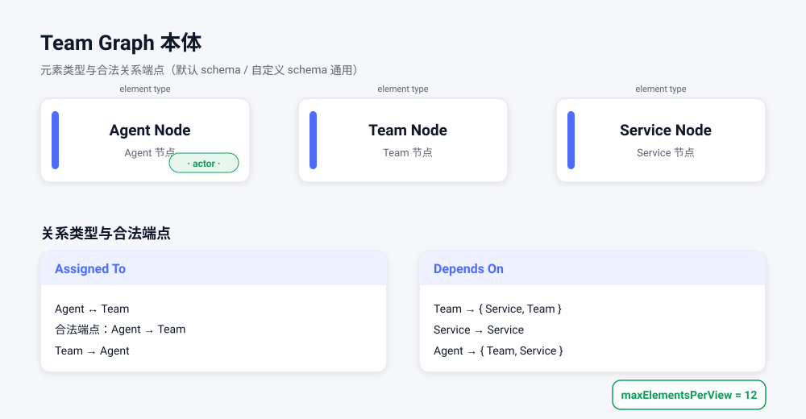
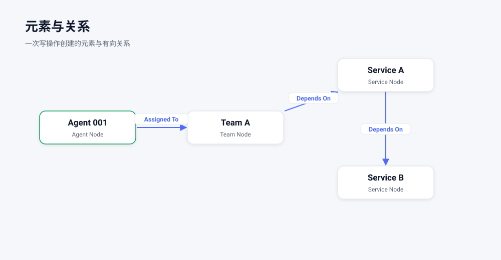
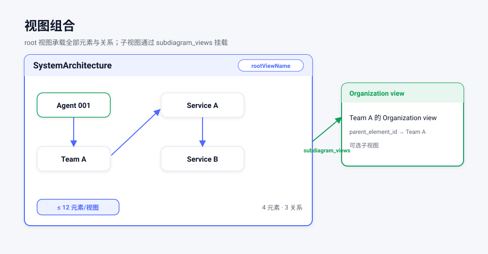
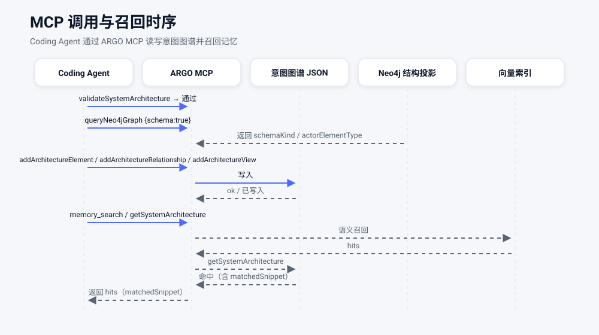

使用案例 · 自定义业务域本体
用团队协作本体（Team Graph）建一张图
本页用一个真实可运行的例子演示 ArchGraph 最核心的一条路径： 定义你自己的业务本体 → 建元素 → 建关系 → 建视图 → 校验并做语义召回。 所有内容都对应仓库里的 custom-schema/ 示例，你可以直接照抄。
业务域：一个「团队 + 服务」的小场景。我们关心三件事 —— 谁在哪个团队、团队依赖哪些服务、服务之间谁依赖谁。 围绕这个业务，我们定义自己的元素和关系类型，而不是套用通用的 ArchiMate 词表。
写下你的建模语言（本体包 / schema bundle）
在项目根目录放一个 .argo/schema/，ARGO 就会只对这个项目使用你的本体；
其它项目仍用默认的 ArchiMate 3.2。这个目录就是一个本体包（schema bundle）。
哪些文件必需、哪些可选
| 文件 | 是否必需 | 作用 |
|---|---|---|
.argo/schema/SystemArchitecture.schema.json |
独立本体包必需 | 图谱的 JSON Schema：结构 + 元素/关系类型枚举。若本体包用 "extends": "default" 继承内置默认，则本文件可省略（自动继承基座 schema）。 |
.argo/schema/schema-bundle.config.json |
独立本体包必需；extends 时唯一必需 |
打包描述：语言名、actorElementType、不变量、rules 指针等。独立本体包必须在这里把 actorElementType 设为你的某个元素类型（或显式 null 表示无 actor），否则加载/校验 fail-closed；声明 extends 时，只放这一个 config 就够。 |
.argo/schema/schema-bundle.rules.json |
可选 | 类型元数据 + 关系端点合法性矩阵。省略时端点校验变为宽松（任意已知类型可互连）。 |
.argo/schema/GUIDE.md |
可选 | 给人看的指南与推荐视点。 |
两条起步路线：继承默认 vs. 完全自定义
| 起步方式 | 你要写的东西 | 适用场景 |
|---|---|---|
extends: "default" + config |
只加 .argo/schema/schema-bundle.config.json，用 addElementTypes / addRelationships（可选 overrideMatrix）在默认之上追加自己的类型；无需自带 schema 文件。 |
大部分类型沿用 ArchiMate 3.2 + ARGO 扩展，只想加几个业务域类型。 |
| 独立全量 schema | 放完整的 .argo/schema/SystemArchitecture.schema.json，编辑它的两个 $defs 枚举数组；同时必须用 schema-bundle.config.json 声明 actorElementType（取你的某个元素类型，或显式 null），否则加载/校验 fail-closed。schema-bundle.rules.json 可选（省略则端点校验宽松）。 |
完全自定义词表，不需要 ArchiMate 类型。 |
要建模一个不是 Team Graph 的领域，就改下面这两个 $defs 枚举数组里的字符串：
本案例的 SystemArchitecture.schema.json 与内置默认相比，唯一的结构性差异就是
$defs 里的两个 enum 数组（title / description 只是文案，属于非结构差异）。
把 Agent Node / Team Node / Service Node 换成你的元素类型、把
Depends On / Assigned To 换成你的关系类型即可；数组里每个名字都会成为可用的类型。
类型枚举默认从这两把键读取（也可在 config 里用
elementTypeEnumPath / relationshipTypeEnumPath 指定别的键）：
"$defs": {
"archimateElementType": {
"type": "string",
"enum": ["Agent Node", "Team Node", "Service Node"]
},
"archimateRelationshipType": {
"type": "string",
"enum": ["Depends On", "Assigned To"]
}
}
即：archimateElementType.enum 换成你的元素类型列表，
archimateRelationshipType.enum 换成你的关系类型列表。
schema-bundle.rules.json 的 relationshipTargetMatrix 里声明「谁能连谁」，
要么把 schema-bundle.config.json 的 invariants.endpointMatrix 设为 false
走宽松校验。元素类型则必须让 actorElementType 落在枚举里（或显式设为 null）。
步骤 1a：把本体包拷进你的项目
# 只拷 schema 本体包，不要连 .argo/temp/ 这类运行时临时文件一起拷（Windows 用 Copy-Item -Recurse）
mkdir -p <your-repo>/.argo
cp -r custom-schema/.argo/schema <your-repo>/.argo/schema步骤 1b：自己创建图谱文件（自定义本体下必需）
argo init 不会自动生成初始图谱 ——
因为打包的默认图不匹配你的本体。你必须先自己创建 design/KG/SystemArchitecture.json，
否则初始化会明确失败（NO_DEFAULT_GRAPH）。这一步必须在任何 MCP 写入之前完成，也是唯一被允许手写图谱文件的一步；图谱建立后，后续修改一律走 MCP（见步骤 2）。
直接照抄示例内容（与 custom-schema/design/KG/SystemArchitecture.json 一致）：
{
"name": "Team Graph",
"description": "Example graph validated against the custom-schema bundle (Team Graph ontology).",
"elements": [
{
"id": "agent-001",
"name": "Agent 001",
"type": "Agent Node",
"description": "An agent (business actor) assigned to a team."
},
{
"id": "team-a",
"name": "Team A",
"type": "Team Node",
"description": "A team of agents."
},
{
"id": "svc-a",
"name": "Service A",
"type": "Service Node",
"description": "A service Team A depends on."
},
{
"id": "svc-b",
"name": "Service B",
"type": "Service Node",
"description": "An upstream service Service A depends on."
}
],
"relationships": [
{
"id": "rel-1",
"name": "Agent 001 assigned to Team A",
"type": "Assigned To",
"source_id": "agent-001",
"target_id": "team-a",
"source_name": "Agent 001",
"target_name": "Team A",
"statement": "Agent 001 --(Assigned To)--> Team A"
},
{
"id": "rel-2",
"name": "Team A depends on Service A",
"type": "Depends On",
"source_id": "team-a",
"target_id": "svc-a",
"source_name": "Team A",
"target_name": "Service A",
"statement": "Team A --(Depends On)--> Service A"
},
{
"id": "rel-3",
"name": "Service A depends on Service B",
"type": "Depends On",
"source_id": "svc-a",
"target_id": "svc-b",
"source_name": "Service A",
"target_name": "Service B",
"statement": "Service A --(Depends On)--> Service B"
}
],
"views": [
{
"view_id": "view-root",
"view_name": "SystemArchitecture",
"description": "Root view holding the example team graph.",
"included_elements": ["agent-001", "team-a", "svc-a", "svc-b"],
"included_relationships": ["rel-1", "rel-2", "rel-3"]
}
]
}
写好后就可以让 agent 执行 argo init（initializeWorkspace）：它会用你的本体校验这张图、
做第一次 JSON → Neo4j 同步、初始化语义生命周期。之后所有写入都通过 MCP（applySystemArchitectureMutation 等）。
本体定义（本案例）
元素类型三种、关系类型两种，以及「谁能连谁」的端点矩阵：
| 种类 | 名称 | 说明 / 合法端点 |
|---|---|---|
| 元素类型 | Agent Node | 一个 agent（业务执行者）。actorElementType = Agent Node，唤醒门禁用它识别「我是谁」。 |
| 元素类型 | Team Node | 一个由 agent 组成的团队。 |
| 元素类型 | Service Node | 团队所依赖的能力 / 服务。 |
| 关系类型 | Assigned To | 合法端点：Agent Node → Team Node；Team Node → Agent Node。 |
| 关系类型 | Depends On | 合法端点：Team Node → {Service Node, Team Node}；Service Node → Service Node；Agent Node → {Team Node, Service Node}。 |
另外两个不变量：根视图必须叫 SystemArchitecture；每个视图最多容纳 12 个元素
（maxElementsPerView: 12）。
schema-bundle.config.json
{
"$schema": "https://json-schema.org/draft/2020-12/schema",
"title": "Team Graph schema bundle descriptor",
"language": "Team Graph",
"actorElementType": "Agent Node",
"guide": "GUIDE.md",
"rules": "schema-bundle.rules.json",
"deliveryDependencies": {
"sourceDependsOnTarget": ["Depends On", "Assigned To"],
"targetDependsOnSource": []
},
"invariants": {
"statementGrammar": true,
"endpointMatrix": true,
"rootViewName": "SystemArchitecture",
"maxElementsPerView": 12
}
}schema-bundle.rules.json（端点矩阵）
{
"elementTypeMetadata": {
"Agent Node": { "layer": "Organization", "aspect": "Active Structure" },
"Team Node": { "layer": "Organization", "aspect": "Active Structure" },
"Service Node": { "layer": "Organization", "aspect": "Behavior" }
},
"relationshipCategoryByType": {
"Depends On": "Dependency",
"Assigned To": "Assignment"
},
"relationshipTargetMatrix": {
"Depends On": {
"Team Node": ["Service Node", "Team Node"],
"Service Node": ["Service Node"],
"Agent Node": ["Team Node", "Service Node"]
},
"Assigned To": {
"Agent Node": ["Team Node"],
"Team Node": ["Agent Node"]
}
}
}
Agent Node 标为 actor、Team Node、Service Node）；
右侧是两种关系类型（Assigned To、Depends On），箭头即合法端点；角落标注 maxElementsPerView=12。
视图、元素、关系一次提交
图谱建立之后，所有写入都通过 MCP，不要手改 JSON 文件（步骤 1b 的初始 bootstrap 是唯一例外）。让 agent 调用
applySystemArchitectureMutation，传入下面这个真正可运行的批次（它不是 shell 命令）：
把根视图、4 个元素、3 条关系放进同一次调用，
由服务端按依赖关系做拓扑排序、原子写入。注意 mutations 的第一项是 addView：
先把根视图 view-root 建出来，后面的元素再用 view_ids: ["view-root"] 挂进去 ——
绝不出现「元素引用了还不存在的视图」。
{
"mutations": [
{
"type": "addView",
"view": {
"view_id": "view-root",
"view_name": "SystemArchitecture",
"description": "Root view holding the example team graph."
}
},
{
"type": "addElement",
"element": {
"id": "agent-001",
"name": "Agent 001",
"type": "Agent Node",
"description": "An agent (business actor) assigned to a team."
},
"view_ids": ["view-root"]
},
{
"type": "addElement",
"element": {
"id": "team-a",
"name": "Team A",
"type": "Team Node",
"description": "A team of agents."
},
"view_ids": ["view-root"]
},
{
"type": "addElement",
"element": {
"id": "svc-a",
"name": "Service A",
"type": "Service Node",
"description": "A service Team A depends on."
},
"view_ids": ["view-root"]
},
{
"type": "addElement",
"element": {
"id": "svc-b",
"name": "Service B",
"type": "Service Node",
"description": "An upstream service Service A depends on."
},
"view_ids": ["view-root"]
},
{
"type": "addRelationship",
"relationship": {
"id": "rel-1",
"name": "Agent 001 assigned to Team A",
"type": "Assigned To",
"source_id": "agent-001",
"target_id": "team-a",
"source_name": "Agent 001",
"target_name": "Team A",
"statement": "Agent 001 --(Assigned To)--> Team A"
},
"view_ids": ["view-root"]
},
{
"type": "addRelationship",
"relationship": {
"id": "rel-2",
"name": "Team A depends on Service A",
"type": "Depends On",
"source_id": "team-a",
"target_id": "svc-a",
"source_name": "Team A",
"target_name": "Service A",
"statement": "Team A --(Depends On)--> Service A"
},
"view_ids": ["view-root"]
},
{
"type": "addRelationship",
"relationship": {
"id": "rel-3",
"name": "Service A depends on Service B",
"type": "Depends On",
"source_id": "svc-a",
"target_id": "svc-b",
"source_name": "Service A",
"target_name": "Service B",
"statement": "Service A --(Depends On)--> Service B"
},
"view_ids": ["view-root"]
}
]
}applySystemArchitectureMutation / previewSystemArchitectureMutation
会在批次内建依赖图并按拓扑顺序应用，所以一个 mutation 可以引用同批次里稍后才创建的对象
（addElement 加入同批次的视图、addRelationship 的端点同时新增、addView 由同批次元素做父级）。
真正的环会被拒绝并给出 id 链；preview 与 apply 走同一条路径，最终整份文档仍会被整体校验。
四个元素分别是：Agent 001（Agent Node）、Team A（Team Node）、
Service A 与 Service B（Service Node）。每个元素都必须至少属于一个视图，因此都带 view_ids。

Agent 001、Team A、Service A、Service B）
与三条有向边：Agent 001 --(Assigned To)--> Team A、
Team A --(Depends On)--> Service A、Service A --(Depends On)--> Service B。
三条关系（上面同一批次里的片段）
关系也走同样的方式：让 agent 调用 applySystemArchitectureMutation（或单独调用
addArchitectureRelationship）。每条关系的 statement 必须符合
<source> --(<type>)--> <target> 语法，且端点要落在端点矩阵允许的范围里。
下面是上面那个批次里三条关系的片段（是调用参数，不是 shell）：
// 关系 1：Agent 001 --(Assigned To)--> Team A
{
"type": "addRelationship",
"relationship": {
"id": "rel-1",
"name": "Agent 001 assigned to Team A",
"type": "Assigned To",
"source_id": "agent-001",
"target_id": "team-a",
"source_name": "Agent 001",
"target_name": "Team A",
"statement": "Agent 001 --(Assigned To)--> Team A"
},
"view_ids": ["view-root"]
}// 关系 2：Team A --(Depends On)--> Service A
{ "type": "addRelationship",
"relationship": { "id": "rel-2", "name": "Team A depends on Service A",
"type": "Depends On", "source_id": "team-a", "target_id": "svc-a",
"source_name": "Team A", "target_name": "Service A",
"statement": "Team A --(Depends On)--> Service A" }, "view_ids": ["view-root"] }
// 关系 3：Service A --(Depends On)--> Service B
{ "type": "addRelationship",
"relationship": { "id": "rel-3", "name": "Service A depends on Service B",
"type": "Depends On", "source_id": "svc-a", "target_id": "svc-b",
"source_name": "Service A", "target_name": "Service B",
"statement": "Service A --(Depends On)--> Service B" }, "view_ids": ["view-root"] }
图 2 已经画出了这三条关系。注意：如果端点不合法（比如让 Service B 去 Assigned To
Agent 001），写入会被端点矩阵拒绝 —— 这正是自定义本体的价值。
根视图与成员纳入
根视图在批次的第一项就已创建（view-root / SystemArchitecture）。
批次里的每个元素和关系都通过自己的 view_ids 纳入其中；等价地，你也可以让 agent 单独调用
addArchitectureView，在创建视图时直接写出
included_elements 与 included_relationships：
{
"type": "addView",
"view": {
"view_id": "view-root",
"view_name": "SystemArchitecture",
"description": "Root view holding the example team graph.",
"included_elements": ["agent-001", "team-a", "svc-a", "svc-b"],
"included_relationships": ["rel-1", "rel-2", "rel-3"]
}
}subdiagram_views 挂到父元素上，用于表达「一个团队自己的视图」这类层次。
自定义本体的根视图名必须与 rootViewName（这里是 SystemArchitecture）一致；
一个视图最多 12 个元素，本例共 4 个，远在限制内。

SystemArchitecture 内含 4 个元素 + 3 条关系，
并标注 rootViewName 与「≤ 12 元素/视图」；可另有一个经 subdiagram_views 挂载的子视图。
确认本体生效，并验证召回
先做整体校验，再用只读查询确认「当前生效的是哪套 schema」，最后用语义检索验证 agent 真能按意思找到东西。
① 校验图谱
让 agent 调用 validateSystemArchitecture（无参数，校验当前工作区图谱）。
② 报告激活的本体包
让 agent 调用 queryNeo4jGraph，参数：
{ "schema": true }schemaKind: "workspace" ·
schemaLanguage: "Team Graph" ·
actorElementType: "Agent Node" ·
bundleValidation.status: "passed" ·
archimateElementTypes: ["Agent Node","Team Node","Service Node"]。
其中 schemaKind: workspace 表示用的是项目自定义本体，而不是内置默认（default）。
③ 语义检索 / 上下文召回
让 agent 调用 memory_search 按意思找，参数：
{ "query": "which team depends on Service B?" }或让 agent 调用 getSystemArchitecture 语义检索图谱内容，参数：
{ "query": { "purpose": "general", "intent": "team dependencies and agent assignments" } }
召回结果应命中 Team A / Service A / Service B 这条依赖链，
以及 Agent 001 --(Assigned To)--> Team A 的归属关系。命中卡片会带一个
matchedSnippet，告诉你「为什么它匹配」，必要时再用
getIntentElementContext 读取完整内容。

validateSystemArchitecture、queryNeo4jGraph {schema:true}、
写入 addArchitectureElement / Relationship / View，
以及最终带 matchedSnippet 的召回结果。
继续往下
- 想了解安装与日常使用：使用介绍。
- 想一次看全部能力：能力总览。
- 想读机制设计：docs/schema-bundle-decoupling.md。
- 想直接照抄示例：仓库里的 custom-schema/。